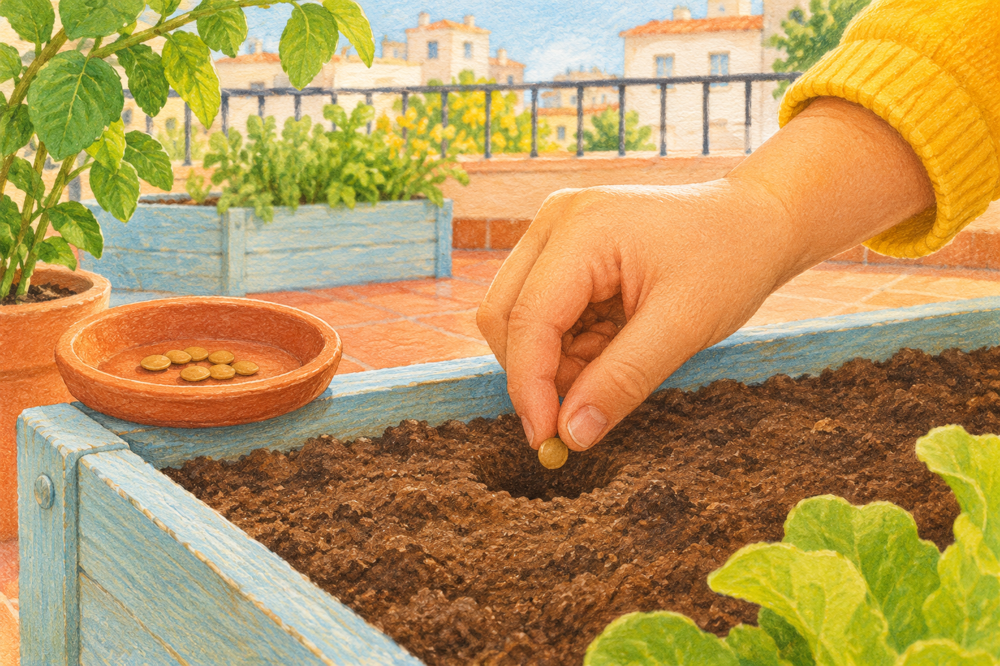
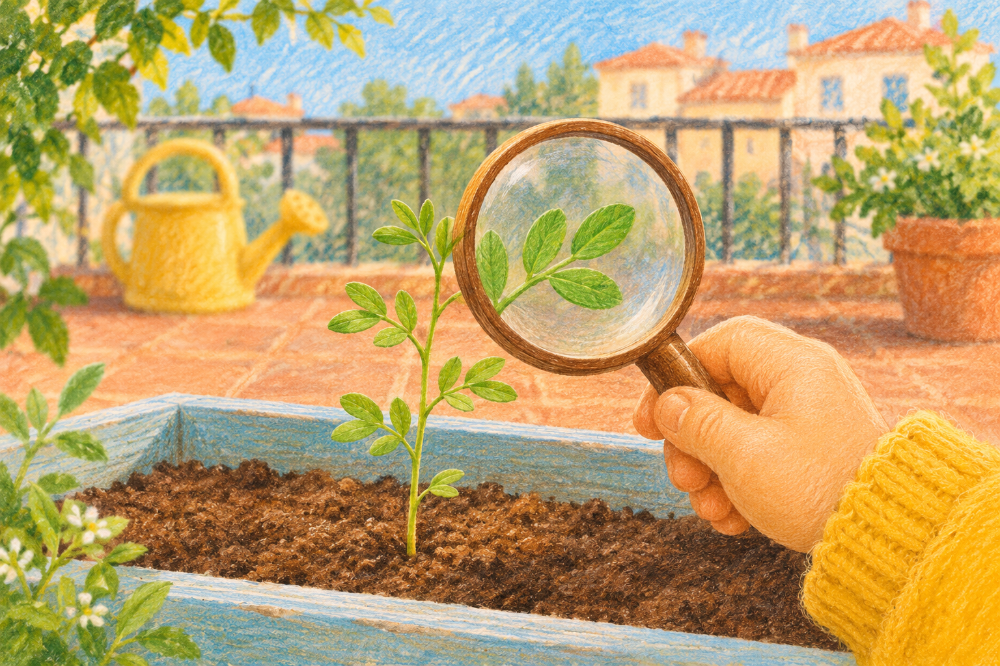
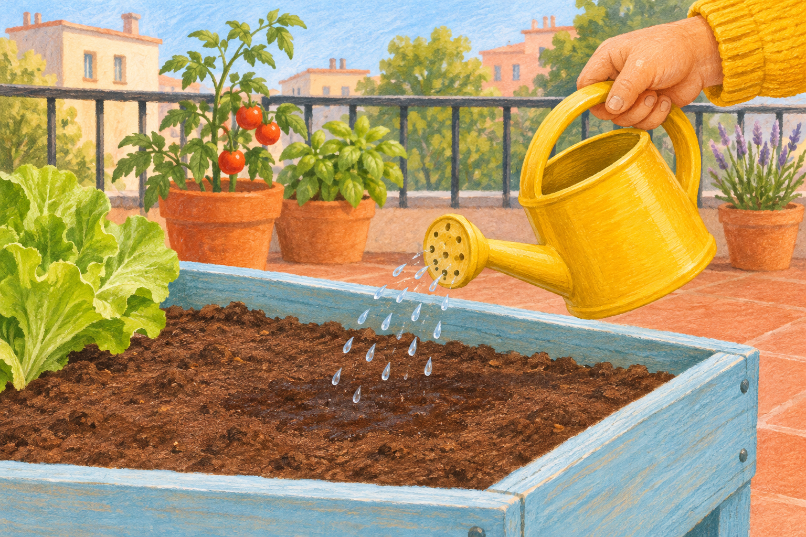
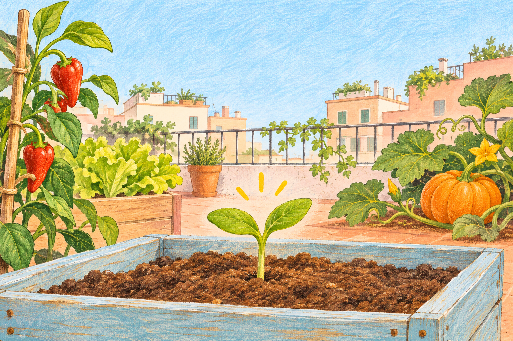

Una semilla
para nuestro huerto.
Un acercamiento al aula invertida a través de la observación, el cuidado y la curiosidad.
Antes del aula,
una pequeña exploración.
La experiencia propone que niños y niñas exploren tres materiales breves con acompañamiento adulto y lleven sus ideas al aula. Después, el grupo investiga qué ocurre con una lenteja húmeda y otra seca y representa lo observado.
El recorrido sigue los niveles recordar, comprender y aplicar. En clase se amplía mediante la comparación, la creación y la revisión de las propias ideas.

01Un cuento visual
Un vídeo de 90 segundos, con imágenes y textos para leer con una persona adulta.

02Un juego para pensar
Preguntas y respuestas con explicaciones sobre las semillas y las plantas.

03Una misión de cuidado
Decisiones sencillas para conectar lo aprendido con una situación cotidiana.
